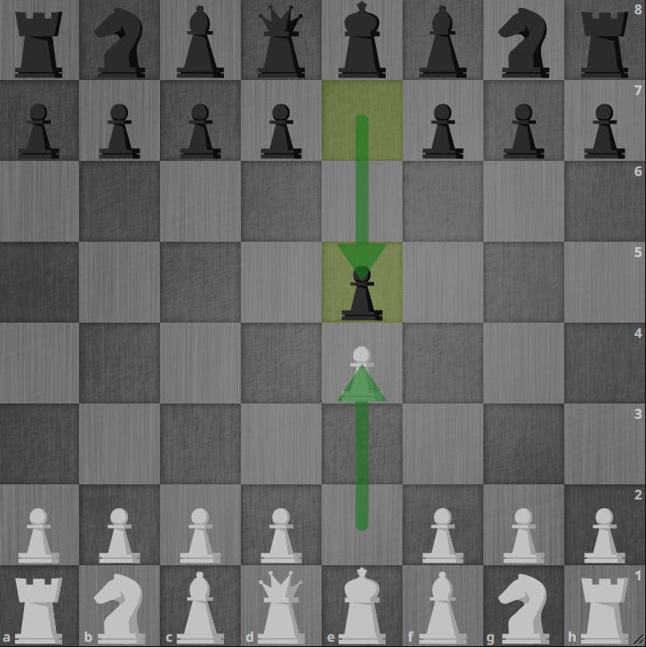
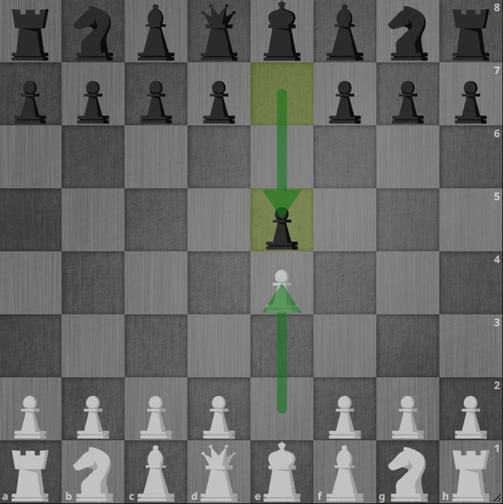

Uma sequência possível de lances para referida partida é:
1.e4 e5
2.Bc4 Cc6
3.Dh5
Desavisado, o rei caçador teria jogado algo como 3…d6??. Ao que o astucioso pastor de ovelhas teria respondido:
4.Dxf7#!
Conta uma lenda que, certa feita, um rei havia saído para uma caçada. No descanso, enfadado, sentiu vontade de fazer algo divertido. Nada melhor que uma partida de xadrez. No entanto, nenhum de seus súditos de momento sabiam mover as peças. Não tardou e descobriram pelas redondezas um pastor de ovelhas aficionado. Sem manifestar qualquer intimidação pela coroa alheia, tratou de rapidamente suplantar o monarca de madeira, naquele que foi batizado de mate-pastor.
“Até um plano ruim é melhor do que a falta de plano.”
1.e4 e5
2.Bc4 Cc6
3.Dh5
Desavisado, o rei caçador teria jogado algo como 3…d6??. Ao que o astucioso pastor de ovelhas teria respondido:
4.Dxf7#!